Con la matriz del Bloque 3 se construye un árbol: cada objeto empieza solo y los grupos se van uniendo hasta formar uno. Este capítulo explica las diez reglas que decide cómo se unen, los tres números que dicen si el árbol merece confianza, cómo cortarlo, el estudio de dendrogramas con sus seis disposiciones y más de cuarenta ajustes, el mapa de calor con árboles y la comparación de reglas mediante tanglegramas.
El Bloque 4 tiene tres tarjetas. En 1 · Build the tree eliges la regla de enlace y construyes el árbol. En 2 · The tree and its cut lo evalúas, lo cortas en grupos y lo dibujas. En 3 · Compare linkage rules and draw tanglegrams lo comparas con los árboles de otras reglas. Arriba, la tarjeta de teoría resume en tres lecciones qué mirar antes de confiar en un árbol. El bloque se activa en cuanto el Bloque 3 calcula una matriz de disimilitudes.
Un agrupamiento jerárquico no produce una partición, sino una familia completa de particiones anidadas: desde n grupos de un objeto hasta un solo grupo con todos. Se representa con un dendrograma, en el que la altura de cada unión es la disimilitud a la que se juntaron las dos ramas. Hay dos maneras de construirlo (figura 5.1).
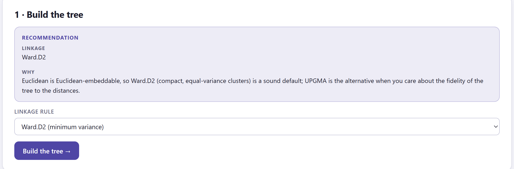
| Si la matriz del Bloque 3… | entonces |
|---|---|
| es euclidiana o casi (masa negativa < 5 %) | Ward.D2: grupos compactos y de varianza parecida. La alternativa es UPGMA si lo que importa es la fidelidad del árbol a las distancias. Con tablas de comunidades añade que UPGMA sobre Bray–Curtis sigue siendo la elección clásica. |
| no es euclidiana (masa negativa ≥ 5 %) | UPGMA (promedio), que solo necesita la matriz. Si quieres Ward, vuelve al Bloque 3 y marca la raíz cuadrada (√d). |
La aglomeración trabaja con la matriz completa y su costo crece con el cubo del número de objetos. Con unos cientos de objetos el árbol tarda menos de un segundo; la app admite hasta 1500. La comparación de reglas de la tarjeta 3 se limita a 600 objetos. Con tablas más grandes, usa los métodos de particionamiento del Bloque 5.
Cuando dos grupos se unen, hay que decidir a qué distancia queda el grupo nuevo de cada uno de los demás. Esa decisión es la regla de enlace, y cambia la forma de los grupos que produce el árbol (figura 5.3). Todas las reglas aglomerativas de la app se calculan con la fórmula de actualización de Lance y Williams (tabla 5.1), la misma que usan los programas estadísticos de referencia.
Si los grupos i y j, con ni y nj objetos, se unen, la distancia del grupo nuevo a cualquier otro grupo k se calcula a partir de las distancias que ya se conocían:
d(ij, k) = αi d(i, k) + αj d(j, k) + β d(i, j) + γ |d(i, k) − d(j, k)|
Cada regla es una elección de los cuatro coeficientes (tabla 5.1). No hace falta volver a los datos originales en ningún paso, y por eso cualquier regla puede aplicarse a una matriz de disimilitudes, aunque las de centroide, mediana y Ward solo tienen sentido geométrico si esa matriz es euclidiana. Para esas tres la app eleva las distancias al cuadrado antes de aglomerar y saca la raíz de las alturas, de modo que el eje del dendrograma queda en las unidades de la matriz.
| En la app | αi · β · γ | Carácter |
|---|---|---|
| Ward.D2 (minimum variance) | (ni + nk)/nijk · −nk/nijk · 0 | Une los grupos que menos aumentan la varianza interna. Grupos compactos y de tamaños parecidos. Requiere distancias euclidianas. |
| Average · UPGMA | ni/(ni + nj) · 0 · 0 | Media de todas las disimilitudes entre miembros. Equilibrado, suele dar la mayor correlación cofenética. Clásico en taxonomía y ecología. |
| Complete (farthest neighbour) | ½ · 0 · +½ | Distancia del par más lejano. Grupos compactos de diámetro parecido; un atípico retrasa la unión de su grupo. |
| Single (nearest neighbour) | ½ · 0 · −½ | Distancia del par más cercano. Recupera formas alargadas o curvas, pero tiende a encadenar objetos uno por uno. |
| Weighted · WPGMA (McQuitty) | ½ · 0 · 0 | Como UPGMA, pero cada subgrupo pesa lo mismo sin importar su tamaño. |
| Centroid · UPGMC | ni/(ni + nj) · −ninj/(ni + nj)² · 0 | Distancia entre centroides. Puede producir inversiones (sección 5.3). |
| Median · WPGMC | ½ · −¼ · 0 | Centroide sin ponderar por tamaño. Mismo riesgo de inversiones. |
| Ward.D (on unsquared d) | como Ward.D2, sobre d sin elevar | La fórmula de Ward aplicada a distancias sin elevar. Solo para reproducir análisis antiguos. |
| Flexible beta (Lance–Williams) | (1 − β)/2 · β · 0 | Un parámetro ajustable. Con β = −0.25 se comporta como un promedio que conserva el espacio; más negativo, más compacto (parecido a Ward). |
| DIANA (divisive) | — (no aglomera) | Divisiones sucesivas por diámetro. Bueno para pocos grupos grandes. |
Al pulsar Build the tree → aparece la segunda tarjeta. Antes de mirar el dendrograma, cinco casillas y una lista de comprobaciones dicen si el árbol es un buen resumen de la matriz (figura 5.4).
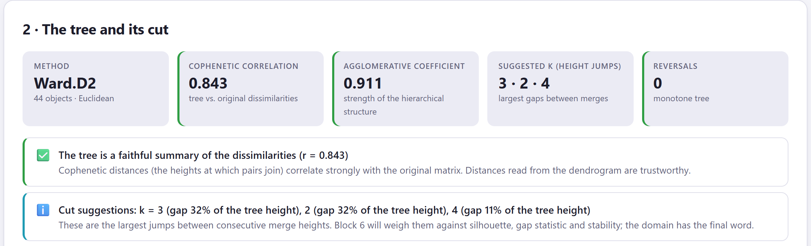
1 2 3 4 5 6La distancia cofenética entre dos objetos es la altura a la que se unen en el árbol. La correlación cofenética es la correlación de Pearson entre esas alturas y las disimilitudes originales de la matriz: mide cuánto de la matriz sobrevive al resumirla en un árbol. UPGMA suele dar la más alta, porque su regla promedia distancias; Ward y el enlace completo sacrifican fidelidad a cambio de grupos compactos.
El coeficiente aglomerativo es el promedio, sobre todos los objetos, de 1 − (altura de la primera unión del objeto / altura de la última unión del árbol). Cerca de 1 los objetos se unen muy pronto respecto de la unión final: estructura clara. Crece con el número de objetos y depende mucho de la regla (Ward lo infla), así que solo sirve para comparar árboles de los mismos datos con la misma regla. Con DIANA se calcula igual y se llama coeficiente divisivo.
Una inversión ocurre cuando un grupo se une a una altura menor que la de una unión anterior que lo formó: la rama "baja" en vez de subir. Solo las reglas de centroide y mediana pueden producirlas. Hacen ambiguo el corte por altura.
| Casilla | Verde | Ámbar | Rojo |
|---|---|---|---|
| Cophenetic correlation | ≥ 0.75 | 0.60–0.75 | < 0.60 |
| Agglomerative coefficient | ≥ 0.70 | 0.50–0.70 | — |
| Reversals | 0 | 1 o más | — |
| Comprobación | Nivel | Qué sugiere |
|---|---|---|
| The tree is a faithful summary of the dissimilarities | ✅ | Las distancias leídas en el dendrograma son fiables. |
| Moderate cophenetic correlation | ⚠️ | El árbol deforma algunas distancias. Compara reglas en la tarjeta 3: UPGMA suele maximizar la correlación. |
| Low cophenetic correlation | ⛔ | El dendrograma representa mal la matriz. Prueba otra regla, otro coeficiente (Bloque 3) o un método de particionamiento (Bloque 5). |
| N reversals in the tree | ⚠️ | Corta por número de grupos y no por altura, o usa promedio o Ward. |
| Chaining | ⚠️ | Más del 70 % de las uniones de la mitad superior del árbol añaden un solo objeto a un grupo que crece: cadenas en vez de grupos compactos. Típico del enlace simple sobre gradientes. |
| This linkage assumes Euclidean distances | ⚠️ | Ward, centroide o mediana sobre una matriz no euclidiana (masa negativa ≥ 10 %): toma √d en el Bloque 3 o usa promedio o completo. |
| Divisive analysis | ℹ️ | Recuerda cómo trabaja DIANA y que su coeficiente divisivo sustituye al aglomerativo. |
| Weak hierarchical structure | ℹ️ | Coeficiente < 0.5: los objetos se unen tarde respecto de la unión final; los datos se parecen más a un gradiente que a grupos anidados. |
| Cut suggestions | ℹ️ | Los tres saltos de altura mayores, con su tamaño relativo a la altura del árbol (sección 5.4). |
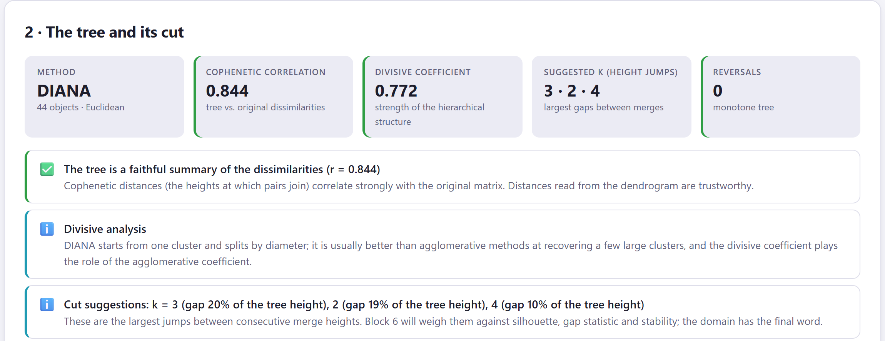
Cortar el dendrograma a una altura produce una partición: cada rama que atraviesa la línea de corte es un grupo. El bloque ofrece una figura para decidir dónde cortar, un control para hacerlo y dos tablas para ver el resultado.
Al construir el árbol la app ya lo corta: en tantos grupos como tenga la agrupación conocida, si la hay, o en el primer k sugerido. Los grupos se numeran de izquierda a derecha en el orden de las hojas, así que el grupo 1 es siempre el de la izquierda del dendrograma. Si cortas por altura, la app calcula cuántas ramas cruza y actualiza k; si cortas por k, la línea se coloca a medio camino entre las dos uniones que separan k − 1 de k grupos.
Un tramo vertical largo sin uniones en el dendrograma significa que los grupos de abajo están bien separados. En la figura de alturas, ese tramo aparece como un salto grande entre la barra de k − 1 y la de k. La app ordena los saltos de mayor a menor entre k = 2 y k = 12 y resalta los tres primeros; la casilla Suggested k y la comprobación Cut suggestions dan los mismos tres, con el tamaño del salto como porcentaje de la altura total. Es una primera idea: el Bloque 6 la contrasta con la silueta, el estadístico gap, la estabilidad y otros diez criterios.
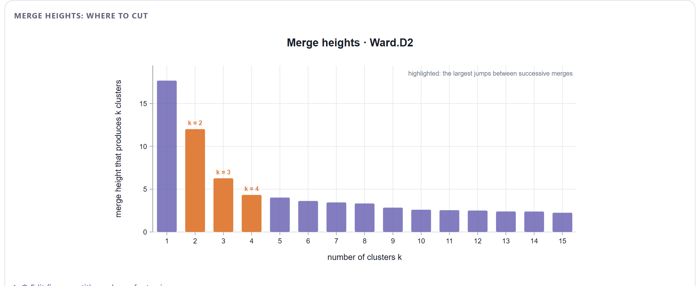
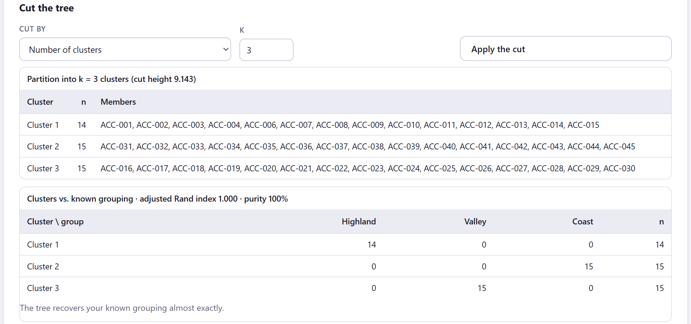
1 2 3 4 5| ARI | Frase de la app |
|---|---|
| > 0.80 | The tree recovers your known grouping almost exactly. |
| 0.50–0.80 | Substantial agreement with the known grouping, with some objects placed differently. |
| 0.20–0.50 | Partial agreement: the clusters and the known grouping capture different structure. |
| < 0.20 | The clusters are unrelated to the known grouping (un ARI cerca de 0 es lo que dan etiquetas al azar). |
La pureza es la proporción de objetos que caen en el grupo conocido mayoritario de su grupo. Un ARI bajo no significa que el árbol esté mal: puede estar encontrando otra estructura, igual de real, que la clasificación previa no recoge.
El estudio es la figura central del bloque. Por defecto dibuja un dendrograma rectangular con las ramas coloreadas por grupo, cajas sombreadas, la línea de corte, los números de grupo, las hojas con su nombre y, si hay agrupación conocida, un punto de color debajo de cada hoja (figura 5.8). Todo se cambia desde Edit figure y cada ajuste se guarda para el informe.
Cualquier nodo del árbol puede girarse sin cambiar nada: un dendrograma de n hojas tiene 2n−1 dibujos equivalentes, y Leaf order elige uno. Dos hojas vecinas en la fila pueden unirse muy arriba; dos hojas separadas pueden estar en la misma rama baja. Lo único que se lee en un dendrograma es la altura a la que se unen dos objetos. Usa el orden de hojas para que la figura sea legible (por ejemplo, alineada con el primer eje del PCoA), nunca como resultado.
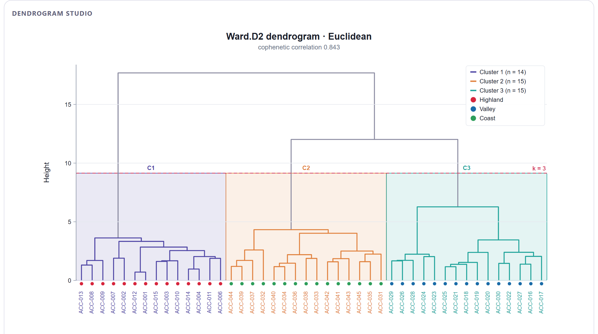
| Grupo | Controles | Qué hacen |
|---|---|---|
| Disposición | Layout | Seis disposiciones: rectangular con las hojas abajo, triangular, horizontal con las hojas a la derecha, horizontal triangular, radial (circular) y radial triangular (abanico). |
| Corte | Clusters k (cut), Cut by, Cut height | Cortan solo la figura, sin tocar la partición del bloque; útil para ver cómo quedaría otro k antes de aplicarlo. |
| Color de ramas | Colour branches by, Cluster palette, Known-group palette, Gradient colour map, Colour above the cut, Single colour | Por grupo del corte, por agrupación conocida (la rama se colorea si todas sus hojas son del mismo grupo), por gradiente de altura o de un solo color; las ramas por encima del corte usan el color neutro. |
| Ramas | Branch width | Grosor de 0.5 a 5 px. |
| Etiquetas | Leaf labels, Label size, Label colour, Label angle offset, Italic labels (taxa) | Mostrar (automático hasta 120 hojas), tamaño, color por grupo, por agrupación conocida o liso, giro adicional y cursiva para nombres científicos. |
| Símbolos de hoja | Leaf symbols, Symbol size, Different shapes per group | Un punto bajo cada hoja coloreado por agrupación conocida o por grupo, y formas distintas por grupo conocido para impresión en gris. |
| Corte y cajas | Show cut line, Cut line colour, Cluster boxes, Box fill opacity, Dashed boxes, Cluster numbers | La línea discontinua del corte (un círculo en las disposiciones radiales), las cajas sombreadas por grupo (sectores en radial) y los rótulos C1, C2… |
| Simplificar | Collapse clusters into triangles, Hang leaves | Sustituye cada grupo por un triángulo con su tamaño; cuelga las hojas a una fracción de la altura en vez de alinearlas en cero. |
| Orden de hojas | Leaf order, Reverse order | Gira las ramas sin cambiar el árbol: orden por defecto, a lo largo del primer eje del PCoA, por agrupación conocida, grupos compactos primero o alfabético donde se pueda. |
| Eje | Height axis, Axis title, Guide circles (radial) | El eje de alturas (círculos guía en radial) y su título. |
| Radial | Inner radius %, Start angle, Sweep angle | Hueco central, ángulo de inicio y apertura del círculo (de 90 a 360°; con menos de 360 queda un abanico). |
| Leyenda | Legend content, Legend position | Grupos, grupos conocidos, ambos o ninguno; automática, arriba a la derecha o a la izquierda, debajo de la figura u oculta. |
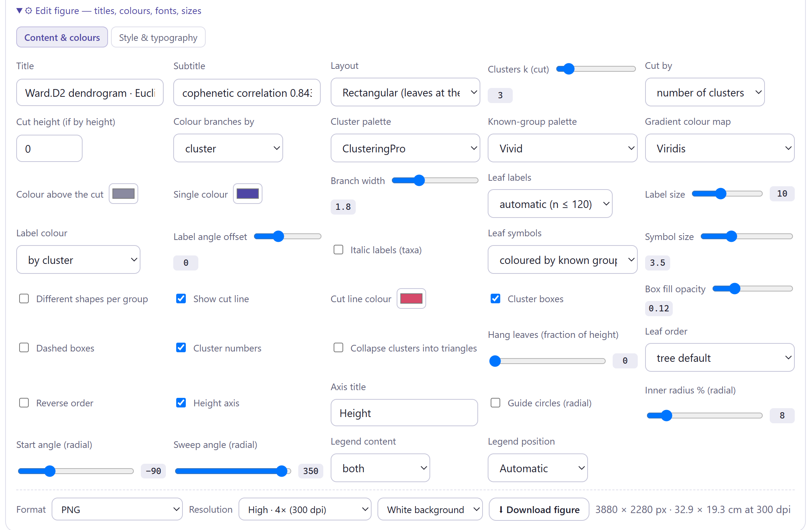
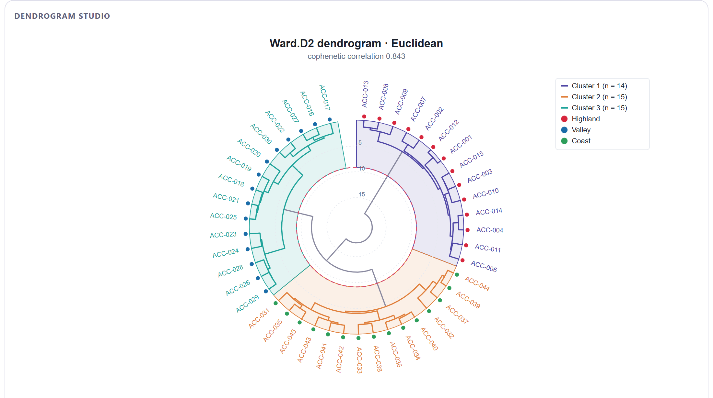
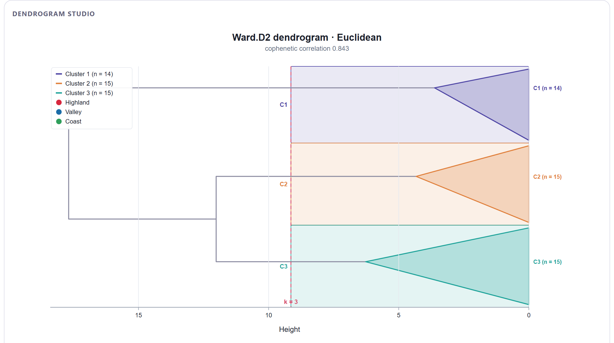
La posición automática coloca la leyenda arriba a la derecha dentro del área del gráfico. Si el árbol es alto en ese lado, la leyenda puede tapar ramas o el rótulo del corte. Cámbiala a Below the plot en Legend position, o reduce su contenido con Legend content. En la práctica 1 de la sección 5.8 se usa esa opción.
Debajo del estudio, Heat map of the variables with the object tree cruza los objetos, ordenados por el árbol, con las variables numéricas de la matriz de trabajo (figura 5.11). Es la forma más directa de ver qué variables distinguen a los grupos. No aparece cuando la entrada es una matriz de distancias ni con menos de dos variables numéricas.
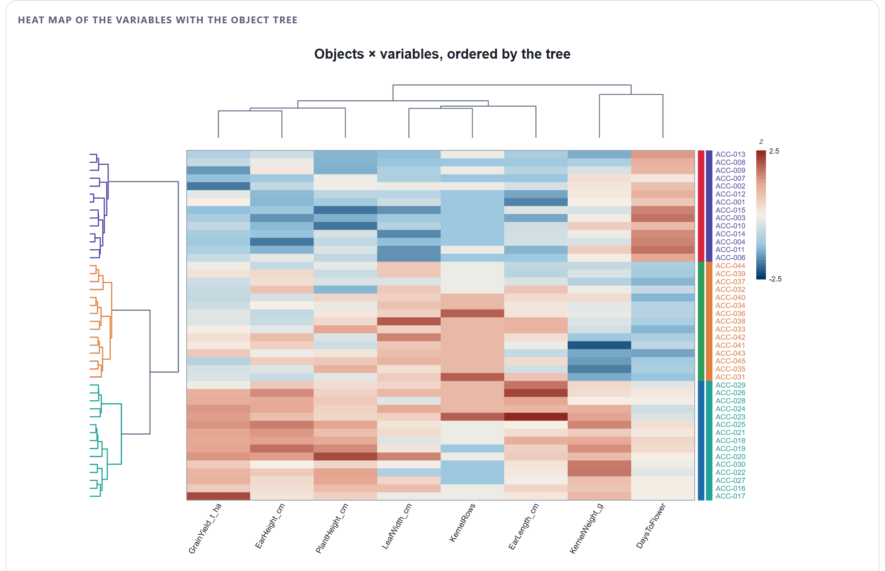
| Control | Qué hace |
|---|---|
| Clusters k | Corte del árbol de objetos para colorearlo (independiente del corte del bloque). |
| Cell colour map | La rampa de colores de las celdas. |
| z-score the variables | Estandariza cada columna para que todas usen la escala completa; desmárcalo para ver los valores de la matriz de trabajo. |
| Cluster the variables too | Ordena las columnas con un árbol UPGMA de distancias euclidianas entre variables estandarizadas y lo dibuja arriba. |
| Object labels, Label size, Label colour | Etiquetas de fila (automáticas hasta 80 objetos), tamaño y color por grupo o liso. |
| Tree size (px), Leaf order | Ancho del árbol de objetos y orden de las hojas, como en el estudio. |
Debajo del mapa de calor, ⬇ Cluster membership (CSV) guarda el grupo de cada objeto (con la agrupación conocida, si existe) y ⬇ Merge table (CSV) guarda las n − 1 uniones del árbol con su paso, las dos ramas unidas, la altura y el tamaño del grupo resultante. Esa tabla permite rehacer el dendrograma en otro programa. El botón Continue to partitioning methods → lleva al Bloque 5.
Distintas reglas dan árboles distintos de los mismos datos. En lugar de confiar en uno, la tercera tarjeta los calcula todos sobre la misma matriz y mide cuánto coinciden. Una estructura que sobrevive a todas las reglas es real; una que aparece con una sola merece sospecha.
| Medida | Qué compara | Lectura |
|---|---|---|
| Cophenetic r | Cada árbol con la matriz original (sección 5.3). | Mayor = árbol más fiel. |
| Aggl./div. coefficient | Fuerza de la estructura jerárquica de cada árbol. | Solo entre árboles de la misma regla. |
| Reversals | Inversiones de cada árbol. | Lo deseable es 0. |
| Cluster sizes at k | Tamaños de los grupos al cortar cada árbol en el k actual. | Muy desiguales (58 / 1 / 1) delatan encadenamiento. |
| ARI vs (regla actual) | La partición en k de cada árbol frente a la del árbol de la tarjeta 1. | 1 = misma partición. |
| Fowlkes–Mallows Bk | Proporción de pares de objetos que están juntos en ambos árboles cortados en k. | 1 = misma partición; 0 = nada en común. |
| ARI vs known groups | Cada partición frente a la agrupación conocida. | Qué regla la recupera mejor. |
| γ de Baker (figura 5.13) | Correlación de rangos del paso en que cada par de objetos queda por primera vez en el mismo grupo, en uno y otro árbol. | Mide toda la jerarquía, no solo el corte. |
| Cofenética entre árboles (figura 5.13) | Correlación de Pearson entre las alturas de unión de cada par en ambos árboles. | Alternativa a Baker en el editor de la figura. |
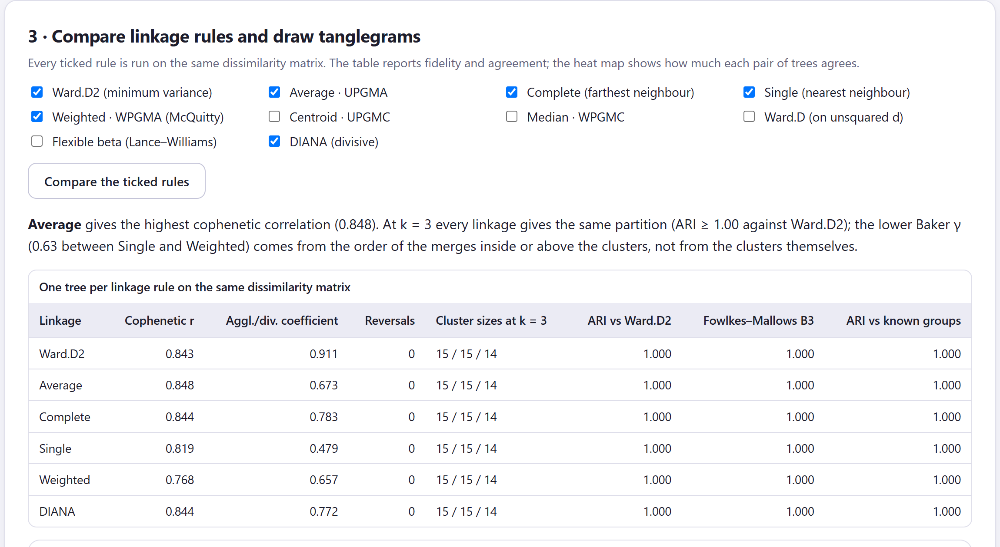
En el maíz, WPGMA tiene un γ de Baker de 0.63 con las demás reglas y, sin embargo, al cortar en tres grupos todas dan exactamente la misma partición (ARI y Fowlkes–Mallows = 1.000). La diferencia está en el orden de las uniones: WPGMA, que no pondera por el tamaño de los grupos, ordena de otra manera las uniones que ocurren dentro de cada región y por encima de ellas. La γ de Baker es sensible a esos cambios de orden porque trabaja con pasos, no con alturas. Cuando las particiones coinciden, la app lo dice expresamente en el párrafo de la tarjeta; léelo junto con las columnas de ARI antes de concluir que "los grupos cambian con la regla".
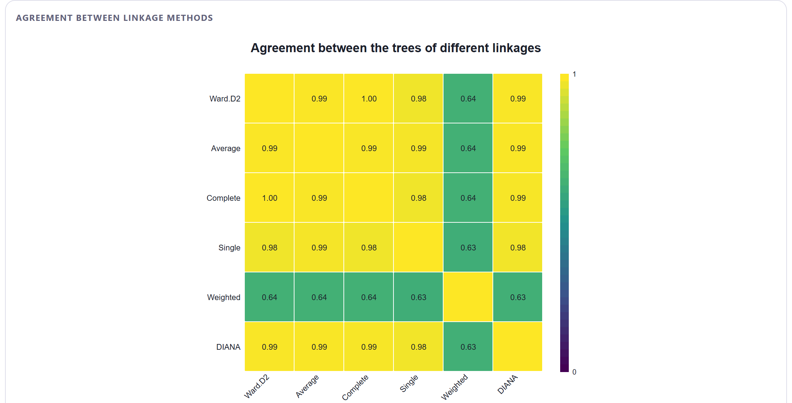
El tanglegrama pone dos árboles frente a frente, con las mismas hojas conectadas por líneas (figura 5.14). Elige los árboles en Left tree y Right tree (por defecto, el de la tarjeta 1 y el de promedio, o Ward.D2 si el de la tarjeta 1 ya es promedio) y pulsa Draw the tanglegram. La app gira las ramas de ambos árboles, sin cambiarlos, para que las líneas se crucen lo menos posible, y resume el resultado al pie de la figura.
El entrelazamiento mide cuánto se desplaza cada hoja entre su posición en el árbol izquierdo y en el derecho, con las diferencias elevadas a 1.5 y divididas por el peor caso posible (el orden invertido): 0 es el mismo orden, 1 es el orden al revés. Como el orden de las hojas es arbitrario (sección 5.5), el entrelazamiento solo tiene sentido después de desenredar: la app gira las ramas de un árbol para seguir el orden del otro, luego las del otro, y repite, quedándose con la mejor combinación. El número de cruces cuenta los pares de líneas que se cortan.
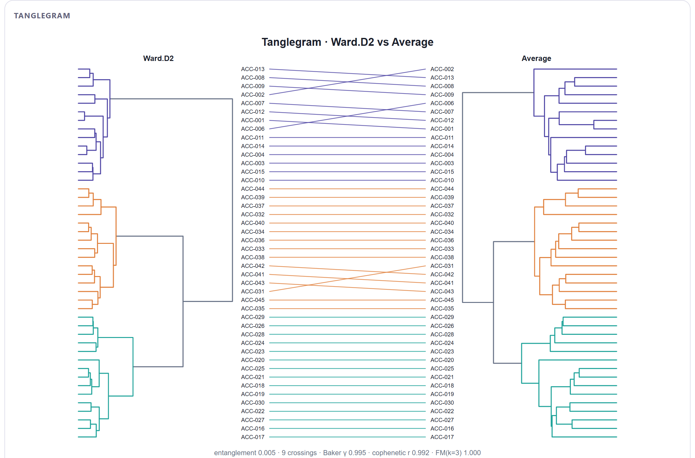
| Control | Qué hace |
|---|---|
| Colour by clusters of the left tree (k) | Colorea ramas y líneas por los grupos del árbol izquierdo; con k = 1 todo va del color de Connector colour. |
| Untangle (rotate branches) | Activa el desenredado; desmárcalo para ver los dos árboles con su orden por defecto. |
| Labels, Label size | Nombres de las hojas junto a cada árbol (visibles por defecto hasta 80 hojas). |
| Space between trees, Branch width, Connector width | Proporción del ancho dedicada a las líneas y grosores. |
Con cada ejemplo preparado en los Bloques 2 y 3 con los valores propuestos, la tabla 5.8 resume lo que da el Bloque 4. Las prácticas se detienen en lo que enseña cada caso; en varias se cambia la regla propuesta a propósito.
| Ejemplo | Regla | Cofenética | Coef. | Saltos | k · ARI | Comparación |
|---|---|---|---|---|---|---|
| Razas de maíz | Ward.D2 | 0.843 | 0.911 | 3 · 2 · 4 | 3 · 1.000 | UPGMA la más fiel (0.848); misma partición con las seis reglas |
| Presencia de especies | UPGMA* | 0.890 | 0.588 | 2 · 3 · 4 | 3 · 0.898 | Ward.D2 recupera los hábitats (ARI 1.000); simple encadena |
| Abundancia de insectos | UPGMA* | 0.901 | 0.671 | 2 · 4 · 6 | 3 · 0.419 | Ward.D2 recupera los paisajes (ARI 1.000) |
| Perfiles de suelo | UPGMA | 0.898 | 0.856 | 2 · 3 · 4 | 2 · — | Todas coinciden (γ de Baker ≥ 0.92) |
| Matriz de distancias | UPGMA | 0.990 | 0.701 | 3 · 6 · 11 | 3 · — | Todas dan la misma partición |
| Cuatro grupos simulados | Ward.D2 | 0.902 | 0.974 | 4 · 2 · 3 | 4 · 1.000 | Misma partición con las seis reglas |
| Ruido uniforme | Ward.D2 | 0.488 | 0.856 | 3 · 6 · 4 | 3 · — | γ de Baker hasta −0.02; simple da 58 / 1 / 1 |
* La app propone Ward.D2 para estas dos matrices casi euclidianas; en las prácticas se construye primero UPGMA, la elección clásica para Jaccard y Bray–Curtis, y se compara con Ward.D2.
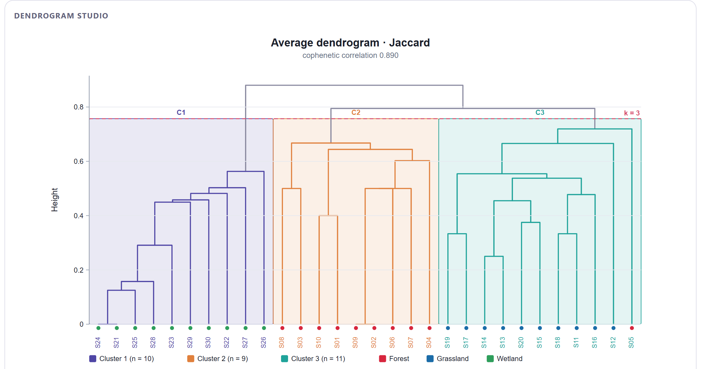
UPGMA reproduce mejor las distancias (0.890 frente a 0.833 de Ward.D2), pero Ward.D2 recupera mejor los hábitats. No hay contradicción: UPGMA dibuja fielmente que S05 está a medio camino entre bosque y pastizal, y la regla de Ward, que prefiere grupos de tamaño parecido, lo asigna al bosque. Qué árbol reportar depende de la pregunta. Si quieres describir la similitud florística entre sitios, UPGMA; si quieres una partición en tipos de vegetación, Ward y, en el Bloque 6, la estabilidad de ese sitio dudoso.
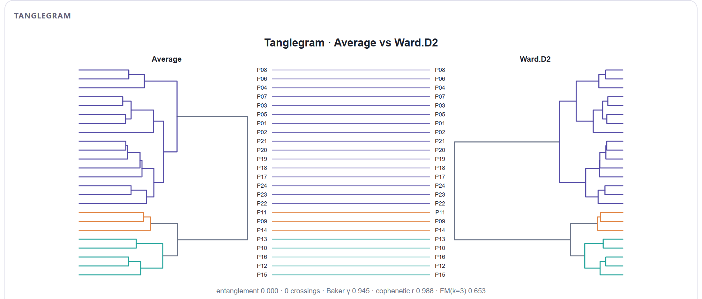
Dos árboles pueden tener la misma forma y producir particiones distintas al cortarlos en el mismo k, porque lo que cambia es la altura relativa de las uniones. En UPGMA, la diferencia entre los dos subgrupos de campos convencionales es mayor que la diferencia entre campos orgánicos y setos; en Ward, que penaliza los grupos grandes y heterogéneos, ocurre al revés. El salto de altura más grande de UPGMA está en k = 2 (campos convencionales frente a campos orgánicos y setos), no en k = 3: el árbol sugiere que la estructura principal de estas comunidades tiene dos niveles, no tres.
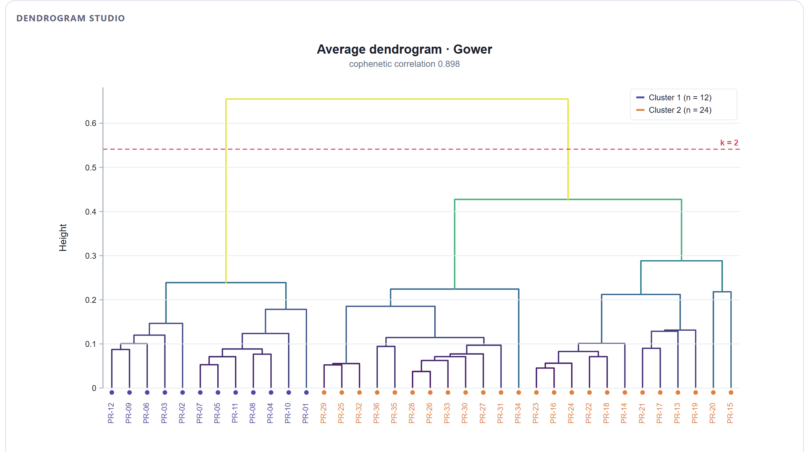
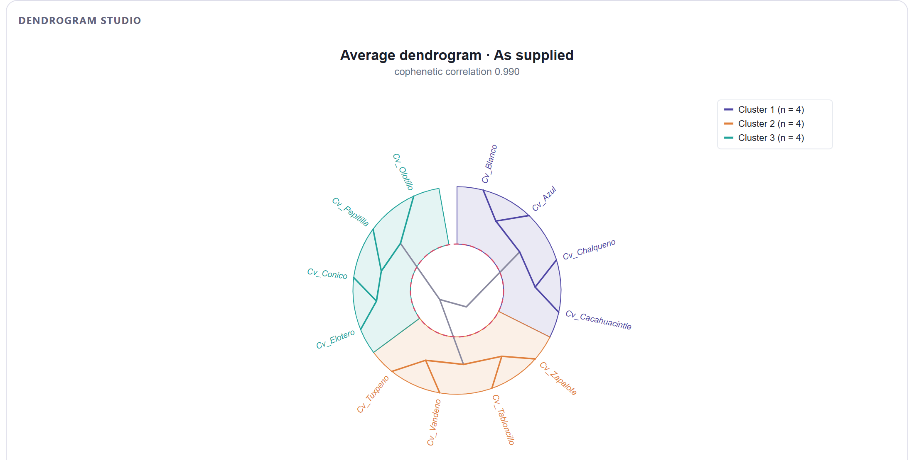
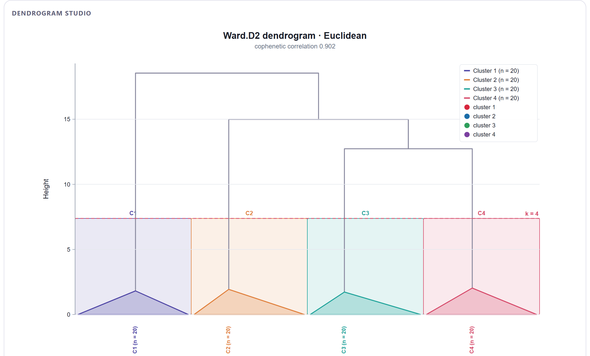
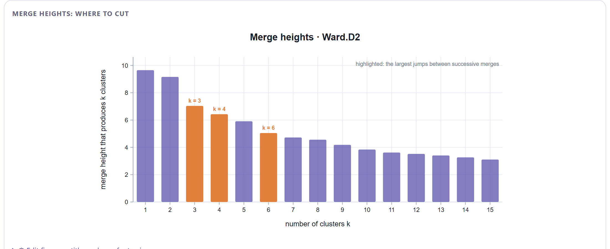
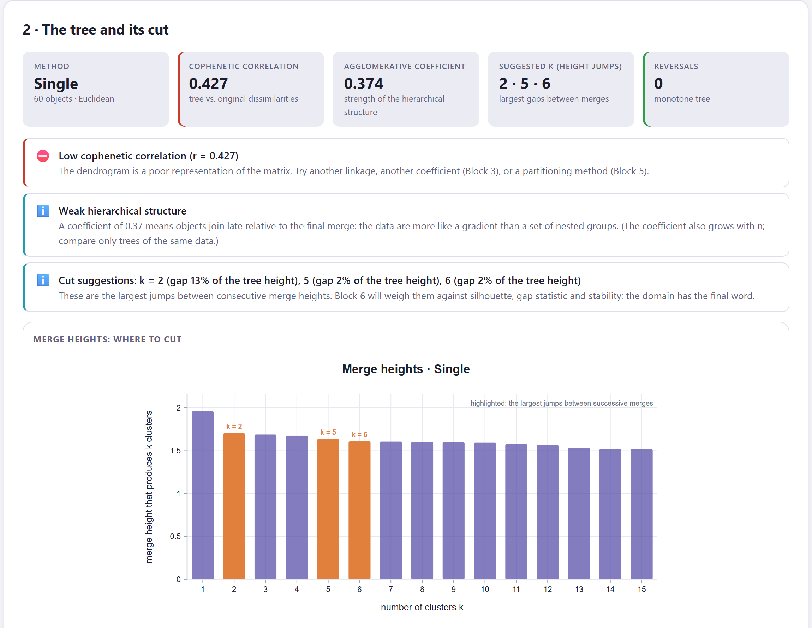
Un coeficiente aglomerativo alto no demuestra que haya grupos: Ward lo infla siempre, porque su criterio hace que la última unión sea mucho más alta que las primeras aunque los datos sean ruido. La correlación cofenética, la forma de la figura de alturas y el desacuerdo entre reglas son los que delatan la falta de estructura. Esta es la tercera señal, después del estadístico de Hopkins del Bloque 2 y del desacuerdo entre coeficientes del Bloque 3.
En la sección de métodos: la regla de enlace (con β si usaste la flexible), el coeficiente de disimilitud sobre el que se construyó, la correlación cofenética, el criterio y la altura del corte y el número de grupos. Si comparaste reglas, la regla más fiel y si las particiones coinciden. Una frase basta: "El árbol se construyó con UPGMA sobre distancias de Bray–Curtis (correlación cofenética 0.901) y se cortó en dos grupos en el mayor salto de altura; las reglas de Ward, completa, simple, ponderada y DIANA produjeron jerarquías concordantes (γ de Baker ≥ 0.88)". El párrafo automático del Bloque 8 la redacta con tus valores.
Con el árbol construido, cortado y comparado, el siguiente capítulo presenta la otra gran familia: los métodos que buscan directamente k grupos sin construir una jerarquía. k-means y sus variantes, PAM y CLARA, el agrupamiento difuso, las mezclas gaussianas, DBSCAN y el agrupamiento espectral, con la comparación de todos ellos a igual k.